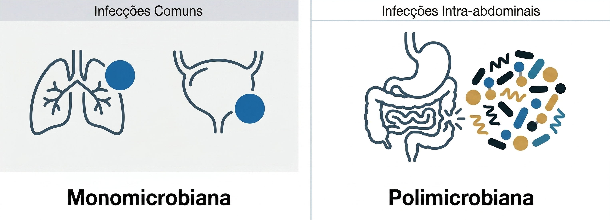

Infecções intra-abdominais
As infecções intra-abdominais apresentam características que as diferenciam de outras infecções bacterianas comuns. Diferentemente de muitas infecções respiratórias ou urinárias não complicadas, a etiologia costuma ser polimicrobiana, envolvendo principalmente bacilos Gram-negativos entéricos e bactérias anaeróbias provenientes da microbiota intestinal 2.
A composição microbiana pode variar conforme o segmento do trato gastrointestinal acometido, o tempo de evolução do processo infeccioso e a presença de perfuração, necrose ou contaminação do conteúdo intestinal.

O reconhecimento da infecção depende da integração entre manifestações clínicas e achados complementares. Dor abdominal localizada ou difusa, sinais de irritação peritoneal, resposta inflamatória sistêmica e alterações em exames de imagem contribuem para aumentar a probabilidade diagnóstica.
Alterações laboratoriais isoladas, como leucocitose ou elevação de marcadores inflamatórios, não são suficientes para definir infecção intra-abdominal sem correlação com o quadro clínico e com achados de imagem.
Uma vez estabelecida a plausibilidade de infecção, o espectro antimicrobiano inicial deve contemplar os microrganismos mais prováveis para o foco identificado. Em infecções comunitárias diagnosticadas precocemente, a probabilidade de patógenos multirresistentes costuma ser baixa e não há justificativa para cobertura excessivamente ampliada.
Por outro lado, internação prolongada, cirurgias recentes ou exposição prévia a antibacterianos podem modificar a probabilidade etiológica e aumentar o risco de resistência bacteriana, exigindo reavaliação da estratégia inicial.
Um princípio central nesse tipo de infecção é que a antibioticoterapia não substitui o controle do foco infeccioso. Drenagem de abscessos, correção de perfurações ou outras intervenções cirúrgicas frequentemente são determinantes para o sucesso terapêutico 2.
Quando o foco infeccioso não é adequadamente controlado, a infecção pode persistir mesmo na presença de antibacterianos microbiologicamente ativos.
Culturas obtidas de líquido peritoneal ou de coleções intra-abdominais podem auxiliar na identificação do agente etiológico e permitir ajuste do tratamento. Entretanto, a interpretação desses resultados deve considerar o contexto clínico e a possibilidade de contaminação.
Assim, nas infecções intra-abdominais, a eficácia terapêutica depende da integração entre antibioticoterapia adequada, controle do foco infeccioso e reavaliação contínua da resposta clínica.